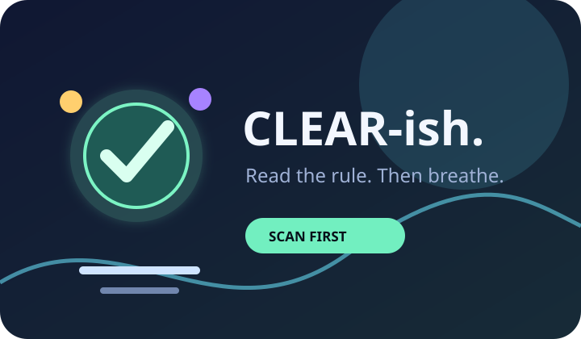
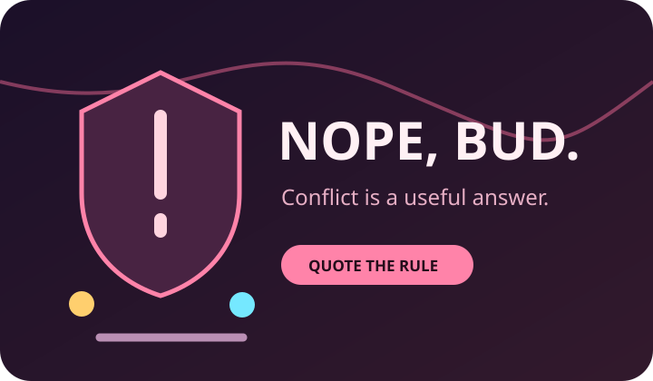
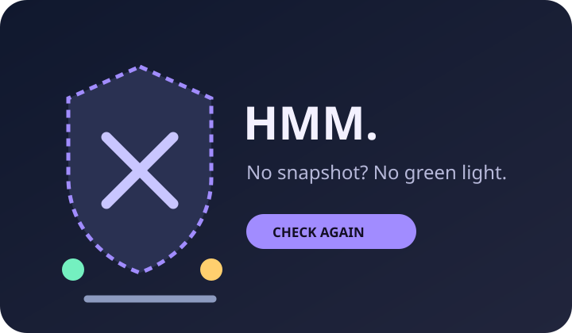
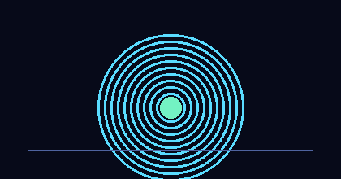

Comical
signal pack.
Simple visual language for a serious habit: check first, quote the rule, keep the receipt.

Clear-ish
For the rare moment the text and the action agree.

Nope, bud.
For actions that bump into the written rule.

Hmm.
For missing snapshots and blocked pages.

A tiny looping signal animation for banners, status pages, or launch posts.